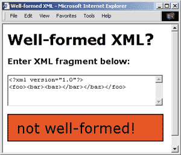
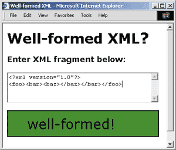

|
XPath, XSLT,
and other XML Specifications
|
| Aaron
Skonnard |
Code for this
article: XML0500.exe
(31KB) |
hen I wrote the first
installment of The
XML Files for the premiere issue of MSDN™ Magazine, I dove right
into a discussion of XML-based persistence behaviors. This month I’d like
to give you a proper introduction to this column. The XML Files will focus
primarily on XML and the technologies that support it. Upcoming columns
will provide a study of the technology specifications and standards (as
defined by W3C, IETF, and so on), and the support for these technologies
in Microsoft® products. The main goal of this column is to distill
XML’s undeniable merits from the noisy industry hype.
Over the past year, several XML specifications have reached the W3C recommendation
status, and the development process has begun. This introduction wouldn’t
be proper if I didn’t review what every XML developer needs to know about
the basics of XML 1.0 and the family of supporting languages and technologies.
Once I’ve established this foundation, I’ll dive deeper in future columns.
Keeping Syntax Simple
It’s easy to fall in love with XML’s elegant simplicity. As you might know,
XML is a simplified, fully conforming subset of the Standard Generalized
Markup Language (SGML) understood by word processing software, printers,
and other display devices. Like SGML, XML separates a document’s structure
from its contents. But in the XML specification, the W3C XML working group
was careful to exclude many of the optional and more complicated aspects
of SGML. If you take a look at the W3C XML 1.0 recommendation found at
http://www.w3.org/TR/REC-xml,
you’ll see the specification isn’t as long as you might expect.
Take a look at the following XML fragment that describes a contact from
a contact manager database:
<contact category="enemy of the state">
<fullname>Will Smith</fullname>
<phonenumbers>
<home>801-555-2323</home>
<cell>801-555-3232</cell>
</phonenumbers>
<email address='will@jiggy.com'/>
</contact>
|
This XML document
illustrates most of what you need to know about XML syntax. Notice that
every begin tag has either an end tag (properly nested) or a forward slash,
to indicate that it’s a properly formatted empty element. And notice that
all attribute values are enclosed within single or double quotes. When
an XML document adheres to the syntactical rules outlined by XML 1.0, it’s
considered well-formed. In fact, by definition all XML documents are well-formed.
If a document is not well-formed, it’s not an XML document—it’s just a
bunch of characters mixed together.
The following four requirements of a well-formed XML document are frequently
violated:
-
All attribute values
must be enclosed in single or double quotation marks.
-
All elements must
have both begin and end tags (unless they’re empty).
-
All empty elements
must contain an empty element identifier (/) at the end of the begin tag.
-
Elements must be nested
properly.
For example, consider the following XML element (which coincides the standard
HTML image element):
<IMG SRC="background.gif" ID=img1>
|
This element violates
two XML syntax rules: it does not use single or double quotation marks
around the ID attribute, and it doesn’t have an end tag or an empty element
identifier. The well-formed version of this image element looks like this:
<IMG SRC="background.gif" ID="img1" />
|
In theory, HTML pages should also be well-formed XML, although in practice
browsers are tolerant of things like unclosed tags. After you’ve been using
XML for a while, though, you’ll find yourself inserting <p/> tags in
your HTML.
Elements must also nest properly to be considered well-formed. This XML
fragment
<foo><bar><baz></bar></baz></foo>
|
is not well-formed
because the </baz> end tag is not contained within <bar>. In a well-formed
document, all elements must be completely contained within their parent
element—they must be properly nested. In other words, both begin and end
tags exist at the same scope.
|  |
| Figure 1
A Document that is not Well-formed |
To test whether a document is well-formed, simply load it into your favorite
XML processor—it will tell you if something is wrong. Microsoft Internet
Explorer 5.0 will tell you exactly where your syntax went wrong, as long
as you give your file the .xml extension. I’ve provided a simple learning
tool with this column that allows you to type in XML and find out instantly
whether it’s well-formed (see Figures 1 and 2).
|  |
| Figure 2
Well-formed Document |
Infoset: The Information
Model
As the XML standards continue to evolve, it has become evident that most
developers—including those in the W3C XML working groups—tend to refer
to XML content abstractions (like document or element) in a way that is
independent of the concrete syntax. As a result, the W3C formed the XML
Information Set working group to formally define the Infoset—a set of abstract
objects and properties that define the abstract information model of a
well-formed XML document. The Infoset helps promote a common vocabulary
and abstract dataset throughout the supporting family of XML specifications
and software. The Infoset is currently a W3C working draft found at http://www.w3.org/TR/xml-infoset.
The Infoset doesn’t mandate any XML processing behavior or set of interfaces,
it simply defines the abstract information model that an XML processor
should make available to the consuming application. The act of formalizing
the information items found in an XML document helps ensure that all XML
processors and languages provide similar abstractions in their implementations.
A document’s Infoset consists of two or more information items. All well-formed
XML documents contain at least the document and element information items.
For the smallest well-formed XML document, consisting of only </x>,
there are two abstractions. One abstraction is for the document information
item and the other abstraction is for the element information item, which
is the root element of the tree.
In addition to the document and element information items last described,
a document may also contain the following information items: attribute,
processing instruction, reference to a skipped entity (an excluded external
parsed entity), character, comment, document type declaration, entity,
notation, entity start marker, entity end marker, CDATA start marker, CDATA
end marker, and namespace declaration.
Because the Infoset makes it possible to refer to information found in
an XML document in a way that’s independent of the exact syntax, most new
XML developments—the Document Object Model (DOM), XPath, XPointer, XML
Schema, and so on—refer to its information model.
Namespaces
The X in XML is especially significant. XML is an extensible language that
allows developers to create vocabularies for use throughout their systems.
Developers are free to use element and attribute names that convey meaning
to the particular processing application. A vocabulary can be thought of
as a group of elements and attributes that make sense to a certain application
type. Once software modules have been written to understand a given markup
vocabulary, it’s typically best for other developers to reuse that vocabulary
instead of creating a new one. This allows developers to use the software
modules already in place.
It’s common for developers to reuse externally defined markup vocabularies
in their XML documents. This makes document sharing easy. Whenever a document
contains multiple markup vocabularies, however, collisions and recognition
errors may occur. To satisfy the need for universally unique element and
attribute names, the W3C developed the XML Namespaces recommendation found
at http://www.w3.org/TR/REC-xml-names.
Namespaces allow developers to qualify element and attribute names with
unique URIs that the developer should typically control. For example, in
this XML fragment
<awl:book awl:ID="1-2323-23424"
xmlns:awl="http://www.awl.com/cseng"
xmlns:dm="http://www.develop.com/courses">
<awl:title>Essential Legos</awl:title>
<dm:related-course dm:ID="EMIND"/>
<dm:title>Essential Mindstorm</dm:title>
</dm:related-course>
</awl:book>
|
both the book and
related-course elements have ID attributes, which could potentially confuse
the consuming application. Also, there are two title elements that mean
different things. This example illustrates how qualifying element and attribute
names with a unique namespace (resource) identifier (a URI) ensures proper
usage of the vocabulary.
The xmlns attributes (seen in the previous example) are called namespace
declarations. The namespace declaration associates a prefix (unique to
the document) with a URI. Prefixing an element or attribute name with the
namespace prefix (for example, awl:book) automatically qualifies the element
or attribute name with the associated namespace URI and guarantees its
uniqueness. If the namespace declaration doesn’t contain a namespace prefix,
however, it’s considered the default namespace for all element names. (This
doesn’t apply to attributes.)
XML APIs
Most XML developers don’t want to implement XML processors. It’s tedious,
time-consuming, and difficult to get right. And with freely available advanced
implementations like the Microsoft XML parser, MSXML 2.x (http://msdn.microsoft.com/downloads/tools/xmlparser/xmldl.asp),
why would anyone want to go through that pain?
What XML developers do need, however, is to work with processor implementations
that conform to the Infoset and standard XML API specifications. This makes
it possible for developers to write implementation-independent code against
standard interfaces that is easier to port and upgrade.
There are two major types of XML APIs in use today: event-based and tree-based.
An event-based API attempts to formalize the XML parsing process by defining
event interfaces that processors can use to serve up the document’s information
items to the application as they are parsed. A tree-based API, on the other
hand, defines an in-memory object model that represents the XML document’s
logical structure, which is made available to the application after the
document has been parsed and loaded.
The Simple API for XML (SAX) is an event-based API specification that is
rapidly gaining popularity because it allows developers to hook directly
into the document parsing process. SAX is different from the rest of the
technologies discussed here in that it was developed collaboratively by
members of the XML-DEV mailing list without the intervention of any industry
standards bodies. SAX has received industry acceptance and has influenced
many of the current XML processor implementations, such as Apache.org’s
Xerces, IBM’s XML4J, and Sun’s ProjectX.
The original SAX proponents included Peter-Murray Rust, Tim Bray, David
Megginson, and many others on the XML-DEV mailing list. David Megginson
coordinated the development discussion that took place on the list, authored
the first draft of SAX 1.0, and has taken responsibility for SAX’s progress
ever since. In January 2000, Megginson released SAX 2.0, which includes
support for namespaces and parser extensibility. Megginson provides a sample
SAX driver for the Java-language version of MSXML, which can be downloaded
from http://www.megginson.com/.
The XML document object model (DOM) is the standard tree-based API specification
that has gained the greatest industry-wide acceptance. The DOM defines
the logical structure of an XML document, which is simply a hierarchy of
nodes, and the interfaces that must be made available to a consuming application.
The DOM exposes elements of the document so they can be manipulated individually
through script or other code. The DOM implies that the document will be
loaded into memory for random access or traversal by the application.
The DOM has been around for some time now. DOM Level 1 (see http://www.w3.org/TR/REC-DOM-Level-1)
is a W3C recommendation that defines the core XML functionality as well
as functionality specific to HTML applications. DOM Level 2 is currently
a W3C candidate recommendation (see http://www.w3.org/TR/DOM-Level-2)
that adds complete namespace support as well as several other necessary
features like traversal, stylesheets, events, and so on.
MSXML 2.x conforms to DOM Level 1 and does a decent job of conforming
to the DOM Level 2 namespace additions, even though DOM Level 2 is not
yet a W3C recommendation.
XPath, XPointer, and
XLink
A well-formed XML document consists of informational items as well as structural
metadata. The structural metadata defines the implicit relationships that
exist between distinct information items. These implicit relationships
can be used for addressing parts of an XML document. Using abstract relationship
descriptions to identify document parts—as opposed to explicit traversal
techniques—greatly simplifies document processing. XPath makes this possible.
XPath is a comprehensive language for document addressing, which recently
became a W3C recommendation (http://www.w3.org/TR/xpath).
XPath got its name from its use of path notation (as with URLs and directories)
for navigating through the hierarchy of an XML document. The precursor
to XPath was XSL Patterns, supported in MSXML 2.0. XPath models an XML
document as a tree of nodes (similar to the DOM) that map to the Infoset.
For example, consider the following XML fragment:
<contact category="enemy of the state">
<fullname>Smith</fullname>
<numbers>
<home>801-555-2323</home>
<cell>801-555-3232</cell>
</numbers>
</contact>
|
Suppose it was necessary
to locate Smith’s phone numbers contained within the document. While this
could be accomplished using SAX or DOM manual processing, this type of
query can be described with a simple XPath expression:
/descendant::contact[fullname="Smith"]/child::numbers/child::*
|
The MSXML 2.6 technology preview contains an implementation of the latest
XPath specification. The technology preview and the accompanying documentation
can be downloaded from MSDN Online at http://msdn.microsoft.com/downloads/webtechnology/xml/msxml.asp.
While MSXML 2.0 supported XSL Patterns, MSXML 2.6 supports both XSL Patterns
and XPath, but it defaults to XSL Patterns for backward compatibility.
MSXML 2.6 supports XPath queries through the IXMLDOMNode selectNodes and
selectSingleNode methods, as well as through its implementation of XSLT
(more on this shortly). To begin experimenting with XPath, simply specify
the selection language through a call to setProperty:
doc.setProperty "SelectionLanguage", "XPath"
sel = doc.selectNodes("descendant::numbers")
|
There are two languages layered on top of XPath that make it possible to
define explicit relationships between documents: XPointer and XLink. XPointer
extends XPath for use in URI fragment identifiers, which are useful for
defining links between documents—or even between different elements of
the same document.
contacts.xml#xpointer(/descendant::numbers/child::*)
|
XPointer also extends
XPath by introducing the notion of points and ranges in an XML document.
XPointer is currently a W3C Working Draft (http://www.w3.org/TR/xptr).
XLink defines the standard mechanism for using XPointer expressions to
create links (or explicit relationships) between document instances or
document elements. XLink is also a W3C working draft (http://www.w3.org/TR/xlink).
MSXML 2.x does not currently support either XPointer or XLink.
Validation and Metadata
A well-formed XML document is not necessarily considered a valid XML document.
A well-formed XML document, as described earlier, meets all of the syntactical
requirements defined by XML 1.0. A valid document, on the other hand, must
also conform to additional vocabulary-level constraints often defined by
a document’s Document Type Definition (DTD). Hence, all valid XML documents
are well-formed, but not all well-formed documents are valid.
Much of the XML 1.0 specification relates to DTDs, which provide document
metadata. DTDs define constraints for a given vocabulary such as the child/parent
relationships, attributes, attribute types, and so on that will be permitted
in that type of document, as well as entities and notations. These constraints
are often referred to as the document’s vocabulary or schema.
The concept of a DTD was borrowed from SGML, although in a somewhat simplified
form. Nevertheless, they remain the most complicated aspect of the XML
language, which is why the W3C is working on a replacement for them. On
top of this, DTD syntax is itself not XML-compliant. This requires developers
to learn a new syntax to write documents with vocabulary constraints. It
also places a much greater burden on XML processor developers since they
need to support both XML and DTD syntax.
DTDs are also oblivious to namespaces. Using DTDs with namespace-aware
documents requires hardcoding the namespace prefix into all DTD markup
declarations. Hardcoding a namespace prefix into the DTD really goes against
everything namespaces represent. Developers have tried to come up with
some creative solutions to this problem using parameter entities, but despite
their best efforts, namespaces and DTDs just don’t mix.
DTDs also have very weak support for element and attribute type descriptions.
In XML 1.0, an element’s type is simply derived from the element name.
The replacement for DTDs that the W3C has been working on is called the
XML Schema Definition Language, or simply XML Schema. XML Schema is broken
down into two separate specifications: one for describing the structure
and constraining the contents of an XML document (http://www.w3.org/TR/xmlschema-1),
and another for defining data types to be used in XML Schema (http://www.w3.org/TR/xmlschema-2).
Both specifications are currently in the working draft phase.
XML Schema improves upon DTDs as a metadata language. First and foremost,
the XML Schema syntax is XML-compliant, which simplifies things for everyone
involved. Second, XML Schema completely supports and exploits the power
of XML namespaces throughout the language. Finally, XML Schema offers an
improved content model that separates type from instance. In short, XML
Schema will become the standard mechanism for defining XML document metadata
in the near future.
MSXML 2.x supports DTDs as well as a reduced set of XML Schema referred
to as XML-Data Reduced (XDR), which is described in a W3C note at http://www.w3.org/TR/1998/NOTE-XML-data-0105,
as well as in a more current document at http://www.ltg.ed.ac.uk/~ht/XMLData-Reduced.htm
(and, of course, on the MSDN Online XML DevCenter at http://msdn.microsoft.com/xml/).
An XML processor that supports validation against a DTD or XML Schema is
referred to as a validating processor, while a processor that doesn’t support
validation is referred to as a nonvalidating processor. Some XML processors
can operate in both modes. MSXML 2.x provides the validateOnParse
property on the IXMLDOMDocument interface for controlling such behavior.
Transformations
If organizations and developers could agree on a single XML vocabulary
or schema, data and document sharing would be much easier. There are, however,
many industry-wide initiatives that promote the sharing of XML vocabularies,
such as BizTalk.org, OASIS, and others. Organizations will benefit from
using domain-specific vocabularies already in place when it’s feasible.
However, most developers realize that the likelihood of a single vocabulary
fitting the needs of all interested organizations is infinitely small.
It’s more likely that many organizations will end up using slight variations
of a published vocabulary.
In situations like this, transformations are required to promote interoperability
between distinct XML vocabularies. The W3C developed the XSL Transformations
(XSLT) language for describing these transformations. XSLT makes it possible
to transform an XML document into any other text-based document (XML, HTML,
comma-separated, C++ header/source files, and so on).
The XSLT language is just another XML vocabulary that defines a declarative,
rules-based language for specifying the transformation process. XSLT builds
upon XPath to define which portions of the source XML document should be
transformed to the target document. The following XML code illustrates
the structure of a simple XSLT stylesheet:
<?xml version="1.0" encoding="UTF-8" ?>
<xsl:stylesheet
xmlns:xsl="http://www.w3.org/1999/XSL/Transform">
<xsl:template match="<XPATH EXPRESSION>">
<!— transformation defined here —>
</xsl:template>
</xsl:stylesheet>
|
XSLT recently became a W3C recommendation (see http://www.w3.org/TR/xslt),
and the technology preview release of MSXML 2.6 provides an implementation
of the latest XSLT specification.
Character Encodings
ISO/IEC 10646 is an international standard that defines the Universal Character
Set (UCS). UCS defines a very large character repertoire and its corresponding
character codes. UCS includes all major and commercially important languages,
and has room to grow. The Unicode standard serves a similar purpose but
was developed by the Unicode Consortium, a group of major American computer
manufacturers. Although they are officially two separate standards, Unicode
has kept in synch with UCS. Today, UCS and Unicode typically refer to the
same character repertoire (although that could change in the future).
In XML, a character is simply a number. The UCS standard defines the meaning
of the number. These numbers can be stored digitally using a variety of
character encoding algorithms. For character repertoires that contain no
more than 256 characters, each character code can be mapped to a single
octet (as with ASCII). For character repertoires that contain more than
256 characters, more sophisticated algorithms are required (as with UCS).
Several character encoding algorithms are available for UCS. The most common
are UTF-16 and UTF-8. UTF-16 simply maps all characters to 2 octets (16
bits), and uses surrogates for larger numbers when it becomes necessary.
UTF-8, on the other hand, stores 7-bit ASCII characters as a single octet
(as with ASCII), but uses anywhere from 2 to 5 octets for all other characters.
If your documents are mostly ASCII, UTF-8 will save space—otherwise it
wastes space.
According to the XML 1.0 recommendation, all XML processors are required
to understand UTF-8 and UTF-16. For that reason, XML processors are automatically
capable of processing ASCII documents because the UTF-8 encoding of an
ASCII document is equivalent to the corresponding ASCII encoding. XML doesn’t
exclude other character encodings, but processors are not officially required
to support them.
For an XML processor to read XML, it must be able to figure out which character
encoding has been used with a given document. One way to achieve this is
through information supplied by the transport layer, as with the MIME Content-Type
header:
Content-Type: text/xml; charset=iso-8859-1
|
This is probably the
safest mechanism for identifying the character encoding used by an XML
resource; unfortunately, such information is not always present. An XML
document can also explicitly declare its character encoding within the
XML declaration:
<?xml version="1.0" encoding="UTF-8"?>
|
But how can the XML processor deal with the text before the encoding declaration?
If a document uses any character encoding other than UTF-8 or UTF-16, it’s
required to have the XML declaration with an encoding attribute as shown
here. Since every one of these XML documents must begin with "<?xml",
it’s possible for processors to autodetect the character encoding family,
which is enough to read the encoding definition and determine the specific
character encoding in use. On the same note, the XML specification defines
a mechanism for autodetecting the use of UTF-8 or UTF-16 in the absence
of the encoding declaration. This is achieved through the UTF-16 Byte Order
Mark (BOM).
If an XML processor doesn’t support the particular character encoding identified
by the document or the transport layer, it’s considered a fatal error.
MSXML 2.x supports a range of standard character encodings, including
UTF-8 and UTF-16. IXMLDOMDocument::load identifies the character encoding
through the mechanisms described earlier. IXMLDOMDocument::loadXML, on
the other hand, assumes UTF-16 since the XML is received as a BSTR. In
this case, if the XML passed to loadXML contains an encoding declaration
of something other than UTF-16, MSXML generates an error.
Although most of the XML examples you’ll see today are ASCII-based, XML
is capable of serving all languages contained within UCS and Unicode. This
standard mechanism for dealing with characters forms the foundation of
XML’s interoperability benefits. Luckily, developers are shielded from
most of these issues since it’s the responsibility of the XML processor
to hide most of the nasty details of dealing with character encoding issues.
XML Everywhere
As more XML specifications develop and solidify, XML continues to mature
into a powerful and flexible technology capable of serving many application
domains. It’s evident that XML is finding its way into every facet of the
software industry. It’s becoming an integral part of database technologies
(such as DBMS and ADO), remote procedure call mechanisms such as SOAP,
and business-to-business integration and messaging software such as BizTalk™.
XML is showing up in Web browsers and servers such as Internet Explorer
5.0 and Internet Information Services 5.0, and many other domain-specific
applications.
Sometimes it seems hard to stay afloat in the sea of XML technologies and
specifications. The technologies covered in this column represent the important
aspects of XML that every XML developer should be familiar with (see Figure
3). In future issues I’ll delve deeper into many of these areas, as
well as other new topics. If you have an XML topic that you would like
me to cover, send your ideas to xmlfiles@microsoft.com. |
Aaron
Skonnard is an instructor and researcher at Developmentor, where he
co-manages the XML curriculum. Aaron wrote Essential WinInet (Addison-Wesley
Longman, 1998) and coauthored Essential XML due out from Addison Wesley
Longman in June 2000. Get in touch with Aaron at http://www.skonnard.com/.
|
From the May
2000 issue of MSDN Magazine. |